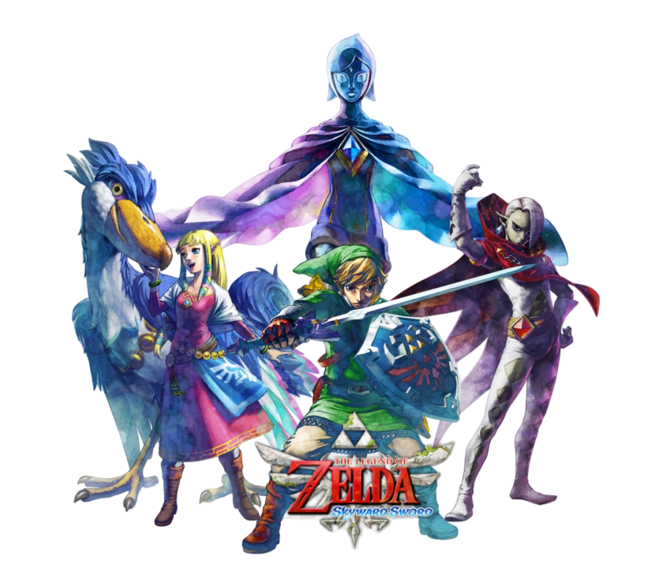

SKYWARD SWORD
Era da Deusa Hylia
No início da cronologia, Link vive em Skyloft, uma ilha localizada acima das nuvens. Após o desaparecimento de Zelda, ele parte em uma jornada até a superfície e acaba envolvido em um conflito ancestral. Durante sua aventura, são reveladas as origens da Master Sword e de elementos que influenciariam o destino de Hyrule por muitas eras.